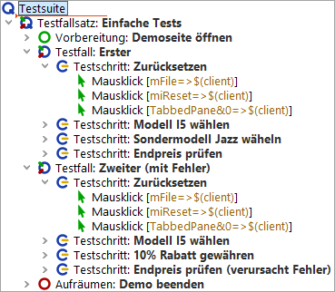

| Version 6.0.3 |
In diesem Abschnitt werden wir die Testsuite ErsteWebTests.qft, die Sie bereits aus Kapitel 1 kennen, weiterentwickeln.
qftest-6.0.3/doc/tutorial der QF-Test Installation in
ein Arbeitsverzeichnis und
Bitte sehen Sie sich den Testschritt "Zurücksetzen" in den beiden Testfällen an. Die beiden Testschritte sind identisch.
|
|  | ||
|
| Abbildung 12.1: Zwei identische Testschritte | ||
Gemäß obiger Überlegungen wäre es also sinnvoll, den Testschritt in eine Prozedur umzuwandeln.
| Letzte Änderung: 6.9.2022 Copyright © 2002-2022 Quality First Software GmbH |